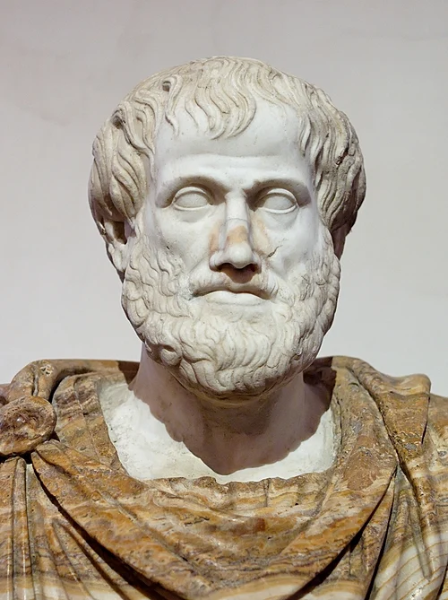
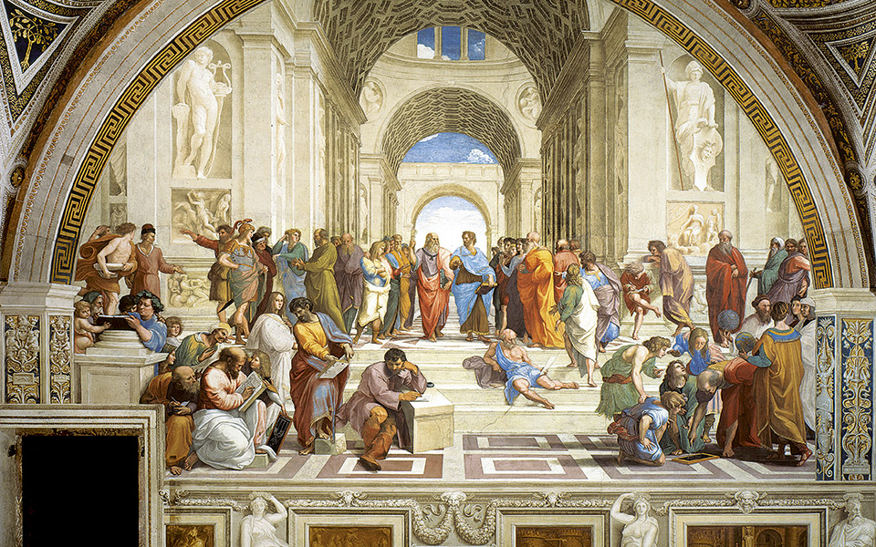
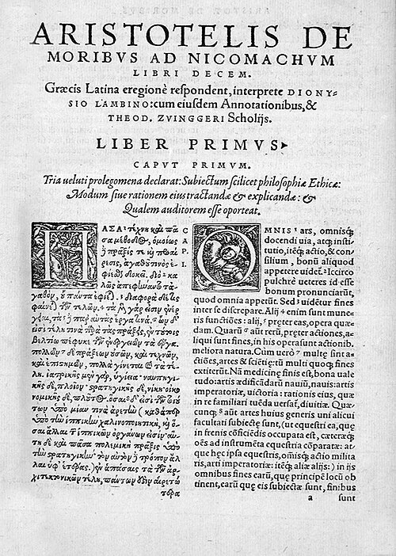

Aristotle · ethical dilemmas · LLM comparison
Discover your VirtueMap.
This is a public demonstration of VirtueMap AI: an ethical dilemma ranking questionnaire grounded in Aristotle's virtue ethics. Rank responses to seven dilemmas, receive a five-virtue pentagon profile, and compare your profile with nine popular LLMs.
To our knowledge, this is the first Aristotelian virtue profiling framework that operationalizes virtue ethics through a ranked ethical-dilemma questionnaire and applies the same framework to LLMs.

We become just by doing just acts, temperate by doing temperate acts, brave by doing brave acts.
Inspired by Aristotle's Nicomachean EthicsClassical foundation
From the Nicomachean Ethics to VirtueMap
VirtueMap AI is inspired by Aristotle's Nicomachean Ethics, a foundational text for virtue ethics. We translate its character-centered perspective into a modern ranking questionnaire: instead of judging one answer as morally correct, the system estimates how strongly your preferences align with five virtues.
Read background on Nicomachean Ethics ↗

The pentagon
The five virtues we profile
The profile is a pentagon. Each corner represents one Aristotelian virtue: Practical Wisdom, Justice, Truthfulness, Courage, and Temperance. Higher values mean that your preferred responses align more strongly with the response patterns associated with that virtue.
Read a dilemma
Each dilemma is general, non-lethal, non-religious, and non-political. There is no single correct answer.
Rank five responses
Drag the responses from most preferable to least preferable. You can skip any dilemma and return later.
Compute virtue alignment
Your ranking is compared with a virtue-expression key using normalized Borda alignment to produce percentages on each virtue axis.
Measured model gallery
Nine LLM VirtueMaps
These 3×3 model profiles use your latest measured OpenRouter outputs. You can update them later by replacing the LLM profile block in data.js.
Compared with LLMs
Your map above the model gallery
Similarity means similarity of virtue-profile shape on this questionnaire, not identical beliefs or values.
Best fitting model
Your closest LLM overlay
Submit at least one ranking to compare your profile with the closest model.